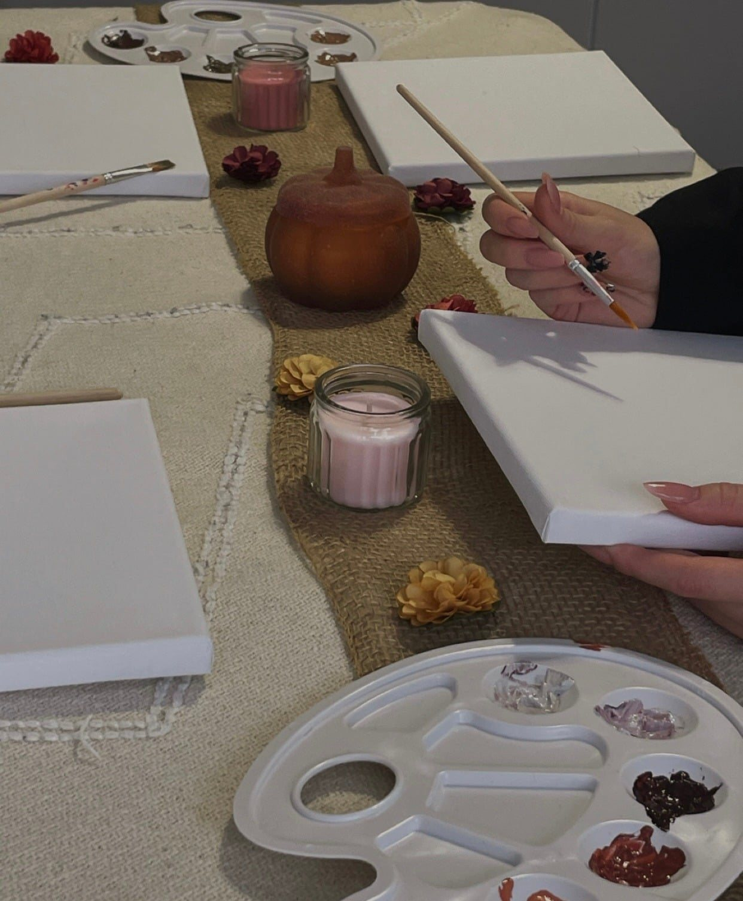

Nasze spotkania odbywają się w kameralnych grupach, dzięki czemu każde z nich ma spokojny, bardziej osobisty charakter.
Dbamy o odpowiednią oprawę całego doświadczenia - od przygotowania przestrzeni i materiałów przez muzykę, światło i zapach, aż po sam przebieg spotkania.
Tworzymy atmosferę która jest elegancka, przytulna i pełna pięknych detali. Naturalne materiały, kwiaty, świece, subtelne aromaty, starannie przygotowany stół i różnorodne sensoryczne elementy sprawiają, że już od pierwszych chwil można poczuć że jest to coś więcej niż zwykłe zajęcia.
Każde spotkanie ma swój temat i charakter. Może być spokojne i wyciszające, pełne kreatywnego tworzenia badź skoncentrowane na zapachach, smakach, muzyce czy kontakcie z naturą.
Program przygotowywujemy tak, aby grupa mogła nie tylko uczestniczyć w aktywnościach, ale przede wszystkim spędzić ze sobą czas.
